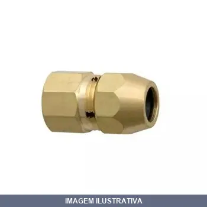
ADAPTADOR PARA INSTALACAO DE GAS BSP M XTM BLUKIT
Indicação de Uso: Instalação de gás para conexão entre tubulações e mangueiras. Material e Resistência: Fabricado em liga de cobre com rosca macho, fornecendo resistência e durabilidade.
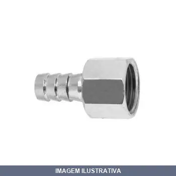
ADAPTADOR PARA INSTALACAO DE GAS RETO /2BSP MXTM BLUKIT
Indicação de Uso: Instalação de gás em cooktop, fogão e conexão entre tubulações de gás com alta e baixa pressão. Material e Resistência: Liga de cobre niquelada. Testado e aprovado em laboratório próprio. Vantagem Prática: Conexão rápida e segura entre tubulações de gás.
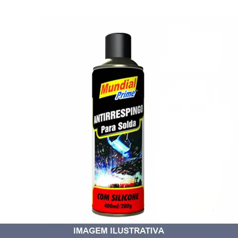
ANTIRRESPINGO AEROSSOL COM SILICONE MUNDIAL PRIME
O Antirrespingo para soldas Mundial Prime foi desenvolvido para que os respingos de solda não se fixe em locais indesejados. Sem afetar a qualidade e a resistência da soldagem, proporciona também proteção anticorrosivo temporária nas chapas e não permite pintura.
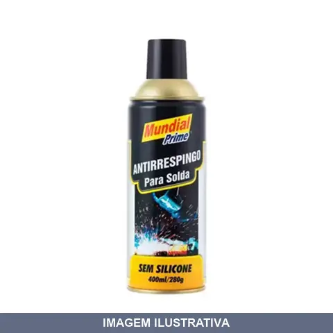
ANTIRRESPINGO AEROSSOL SEM SILICONE MUNDIAL PRIME
O Antirrespingo para soldas Mundial Prime foi desenvolvido para que os respingos de solda não se fixe em locais indesejados. Sem afetar a qualidade e a resistência da soldagem, proporciona também proteção anticorrosivo temporária nas chapas e permite pintura.
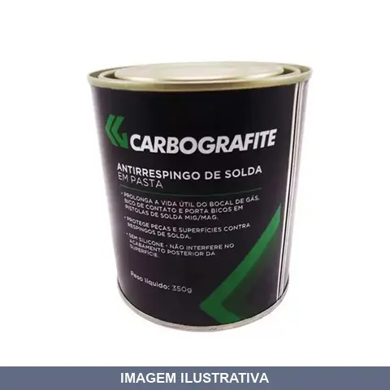
ANTIRRESPINGO EM PASTA 350GR
Utilizados nos processos MIG/MAG, com a finalidade de proteger a peça que está sendo soldada dos respingos provenientes do processo de soldagem. Previne a aderência de respingos de solda nos bocais, bicos de contato e porta bicos em pistolas de solda MIG/MAG

BICO CORTE - ACET 1502 04
Próprios para corte oxicombustível manual ou mecanizado em superfícies limpas, com ou sem oxidação. Seus furos de pré aquecimento garantem distribuição uniforme dos gases e aumentam o rendimento do trabalho. Fabricada em cobre em uma só peça.
![BICO CORTE - ACET 1502 04 [012580]](fotos/012580.webp)
BICO CORTE - ACET 1502 04 [012580]
BICO CORTE 1502 # 04 Bico de corte monobloco, de uso geral. Bico de 02 (duas sedes). Fabricado em cobre telúrio. Usado nos gases oxigênio e acetileno.
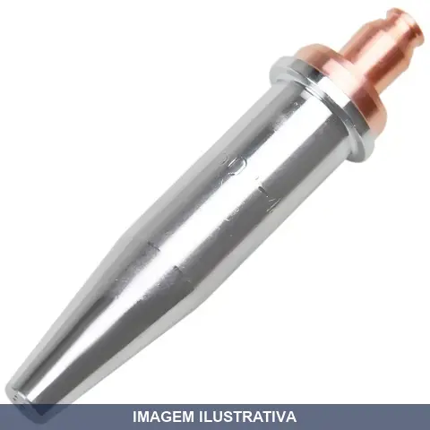
BICO CORTE - ACET 1502 04 [019439]
BICO CORTE 1502 # 04 Bico de corte monobloco, de uso geral. Bico de 02 (duas sedes). Fabricado em cobre telúrio. Usado nos gases oxigênio e acetileno.
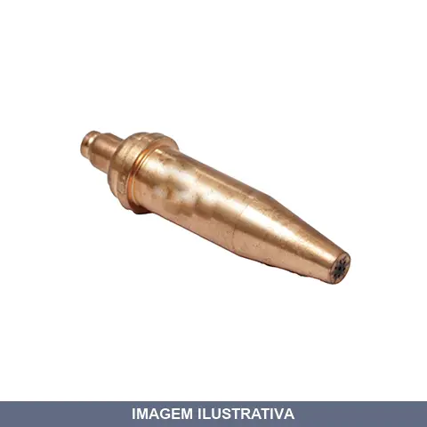
BICO CORTE - ACET 1502 06
BICO DE CORTE 1502 N6 Próprios para corte oxicombustível manual ou mecanizado em superfícies limpas, com ou sem oxidação. Seus furos de pré aquecimento garantem distribuição uniforme dos gases e aumentam o rendimento do trabalho. Fabricada em cobre em uma só peça.
![BICO CORTE - ACET 1502 06 [012583]](fotos/012583.webp)
BICO CORTE - ACET 1502 06 [012583]
BICO CORTE 1502 # 06 Bico de corte monobloco, de uso geral. Bico de 02 (duas sedes). Fabricado em cobre telúrio. Usado nos gases oxigênio e acetileno.
![BICO CORTE - ACET 1502 06 [019438]](fotos/019438.webp)
BICO CORTE - ACET 1502 06 [019438]
BICO CORTE 1502 # 06 Bico de corte monobloco, de uso geral. Bico de 02 (duas sedes). Fabricado em cobre telúrio. Usado nos gases oxigênio e acetileno.

BICO CORTE - ACET 1502 08
Série 1502 para acetileno. Próprio para corte oxicombustível manual ou mecanizado em superfícies limpas, com ou sem oxidação. Furos de pré-aquecimento garantem distribuição uniforme dos gases. Fabricado em liga de cobre com acabamento cromado que prolonga a vida útil. Resistente ao retrocesso de chamas. Corta chapas de aço até 300 mm de espessura.
![BICO CORTE - ACET 1502 08 [012584]](fotos/012584.webp)
BICO CORTE - ACET 1502 08 [012584]
BICO CORTE 1502 # 08 Bico de corte monobloco, de uso geral. Bico de 02 (duas sedes). Fabricado em cobre telúrio. Usado nos gases oxigênio e acetileno.
![BICO CORTE - ACET 1502 08 [019440]](fotos/019440.webp)
BICO CORTE - ACET 1502 08 [019440]
BICO CORTE 1502 # 08 Bico de corte monobloco, de uso geral. Bico de 02 (duas sedes). Fabricado em cobre telúrio. Usado nos gases oxigênio e acetileno.

BICO CORTE - GLP CARBOG
BICO DE CORTE 1503 N4 Próprios para corte oxicombustível manual ou mecanizado em superfícies limpas, com ou sem oxidação. Seus furos de pré aquecimento garantem distribuição uniforme dos gases e aumentam o rendimento do trabalho. Fabricada em duas peças sendo a capa em cobre e o miolo em latão.

BICO CORTE - GLP CONDOR-MG
BICO CORTE 1503 # 04 Bico de Corte fabricado em duas peças (capa e pirulito) de uso geral. Bico de duas sedes. Capa fabricada em cobre telúrio e pirulito fabricado em latão. Usado com os gases oxigênio e GLP/GN.
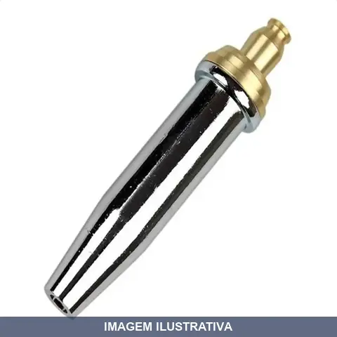
BICO CORTE - GLP SM
Bico de corte modelo 1503-04 para uso com GLP. Construído em duas peças: capa cromada e núcleo em latão. Duas sedes de corte. Indicado para queimadores e maçaricos que utilizam GLP como combustível. Resistente ao calor de trabalho em operações de corte oxiacetilênico com gás liquefeito.
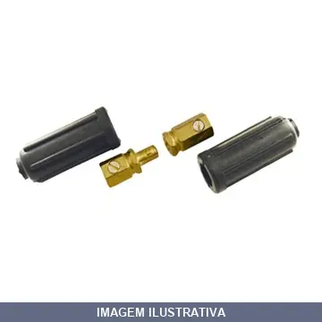
CONECTOR CABO SOLDA / 500A 25 70MM
Conector para cabo de solda com capacidade de 500A. Indicado para conexão e desconexão rápida em equipamentos de soldagem. Material condutor que permite fluxo eficiente de corrente elétrica em aplicações de soldagem industrial e de manutenção.
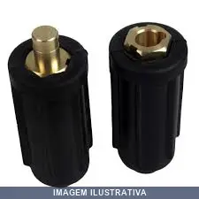
CONECTOR CABO SOLDA / 500A 25 90MM
CONECTOR CG 500 BORRACHA Referência nacional em conectores. Capa protetora em borracha. Prolonga cabos de 25 até 95mm² de forma prática eficiente e segura. Corrente de 500A.

CONECTOR CABO SOLDA CG- - COMPLETO CARBOGRAFITE
CONECTOR CG 10-25 COMPLETO Prolongam cabos de 10 até 25mm² de forma prática eficiente e segura. Corrente de 200A.
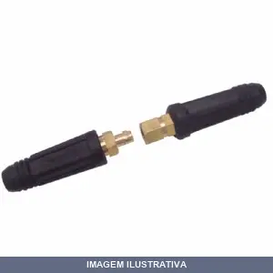
CONECTOR CABO SOLDA CG- - MACHO CARBOGRAFITE
CONECTOR CG 10-25 MACHO Prolongam cabos de 10 até 25mm² de forma prática eficiente e segura. Corrente de 200A.
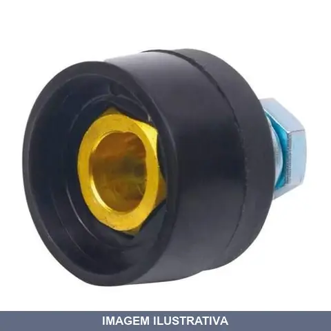
CONECTOR CABO SOLDA ER FEMEA - NOLL
Indicação de Uso: Conectar e/ou emendar cabos de solda em máquinas de solda. Material e Resistência: Conector fêmea com contato de latão e cobertura de borracha. Vantagem Prática: Engate rápido para conexão e desconexão prática do cabo terra, tenaz e acessórios da máquina de solda.
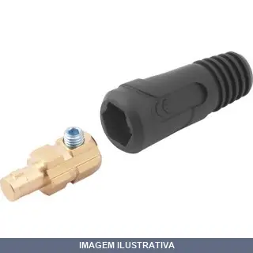
CONECTOR CABO SOLDA MACHO VONDER
CONECTOR ENGATE RAPIDO 13 MM MACHO VONDER Conector macho com bucha de redução para 35 mm² Indicado para conectar cabos de solda
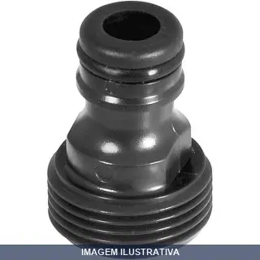
CONECTOR MACHO VONDER
CONECTOR PLASTICO MACHO VONDER Indicado para colocação em torneiras de jardim. Utilizar com engate rápido. Fabricado em plástico ABS de alta resistência Modelo do conector plástico:Macho (rosca externa) Medida da rosca do conector plástico:3/4" Medida do engate rápido do conector plástico:1/2"
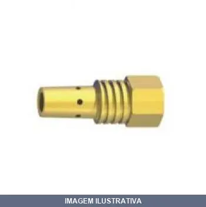
DIFUSOR GAS ROSCA QUADRADA WELD CP SUMIG
Indicação de Uso: Difusor para equipamento de soldagem com alimentação de gás de proteção. Aplicável em processos de soldagem MIG/MAG. Material e Resistência: Construção em latão, resistente a corrosão para ambiente de soldagem. Vantagem Prática: Rosca quadrada facilita acoplamento e fixação rápida ao equipamento.

ELETRODO . ELETRON
Indicação de Uso: Solda e ponteamento de chapas e tubos de aço de baixo e médio carbono. Material e Resistência: Eletrodo revestido tipo rutílico com revestimento de qualidade e bico eficiente. Vantagem Prática: Fusão macia, escória de fácil controle e remoção, bom acabamento do cordão de solda com alta soldabilidade.
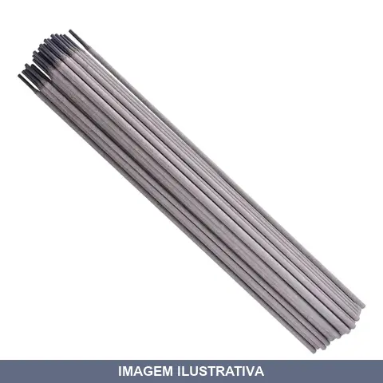
ELETRODO . VONDER
Eletrodo revestido para soldagem de aço carbono em geral. Indicado para diversos tipos de juntas e todas as posições de trabalho. Proporciona cordão com acabamento e baixo nível de respingos. Adequado para estruturas metálicas e ponteamentos.

ELETRODO . WELD WEST ARCO
Indicação de Uso: Eletrodo revestido rutílico para uso geral em soldagem de aço carbono, todos os tipos de juntas e em todas as posições. Adequado para estruturas metálicas, serralherias, construção civil, chapas galvanizadas e ponteamento. Material e Resistência: Revestimento rutílico com arco estável e suave, proporciona cordões de acabamento com penetração média. Apresenta baixo índice de respingos e escória de fácil remoção. Vantagem Prática: Soldagem produtiva em diferentes

ELETRODO CONARCO
Eletrodo revestido para soldagem. Indicado para trabalhos gerais de soldagem em aço carbono. Material com revestimento 7018, apropriado para junções e reparos estruturais. Vantagem prática: facilita o trabalho de soldadores em diferentes posições.

ELETRODO CROMO NIQUEL . . OK
Indicação de Uso: Soldagem de aços inoxidáveis, aços de composição desconhecida, aços dissimilares, aços ao manganês, aços para molas e ferramentas. Recomendado também para equipamentos em alimentação, química, petroquímica e celulose com exigência de resistência à corrosão. Material e Resistência: Eletrodo rutílico austeno-ferrítico ligado ao cromo-níquel que deposita aço inox 29/9. Oferece resistência a corrosão sob tensão e resistência a oxidação superficial até 1150°C. resistência
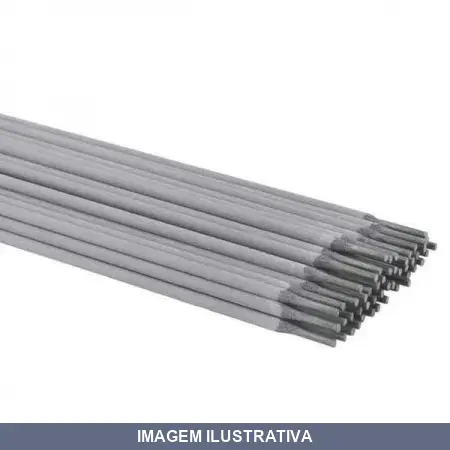
ELETRODO CROMO NIQUEL . ELETRON
Eletrodo revestido para soldagem de aços especiais e ligas. Composição com cromo e níquel indicada para trabalhos que exigem resistência à corrosão e ao desgaste. Aplicável em soldagem de estruturas metálicas e peças que demandam propriedades específicas de resistência.
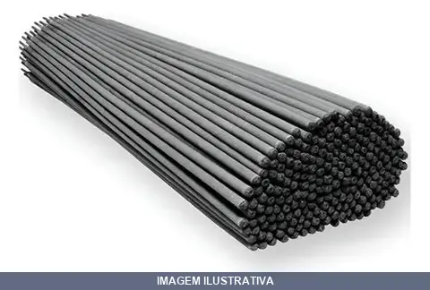
ELETRODO DE CORTE ELETRON
ELETRON CORTE 4,00 LT 20KG Eletrodo especialmente desenvolvido para as várias operações de chanfro, corte e furos em todo o tipo de metal. Tem excelentes propriedades de ignição e reignição, grande resistência em altas amperagem. Proporciona corte e chanfro com alta velocidade em aço de baixo, médio e alto carbono, inoxidáveis, fundidos, aço temperado, aço manganês, metais não ferrosos, etc. Oferece chanfros limpos e uniformes com grande facilidade de remoção de material e economia de tempo. E

ELETRODO FERRO FUNDIDO . . OK
Indicação de Uso: Reparação de peças e blocos de motores em ferro fundido cinzento, maleável e nodular. Soldagem a frio ou com moderado pré-aquecimento. Enchimento de falhas de fundição e união de ferro fundido ao aço. Material e Resistência: Alma de níquel ou níquel-ferro. Resistência à fissuras e usinabilidade. Vantagem Prática: Arco suave e controlado. Dispensa tratamentos térmicos pós-soldagem.
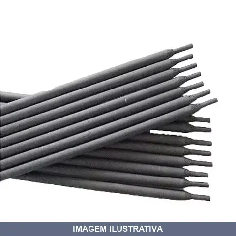
ELETRODO FERRO FUNDIDO AWS NIFE ELETRON
Eletrodo NF75% NAO LIMAVEL com revestimento bastante espesso, tipo grafítico, de fusão suave, escória leve e de fácil remoção, bom depósito. Eletrodo de NiFe ligado no revestimento, indicado para a soldagem de F° F° cinzento, maleável e nodular, e também para a união de F°F° com aço. Aconselhável reduzir ao mínimo a amperagem a fim de limitar o aquecimento da peca e consequentes rachaduras. Deve-se evitar também o resfriamento brusco da zona de transição para permitir a sua posterior usinagem.
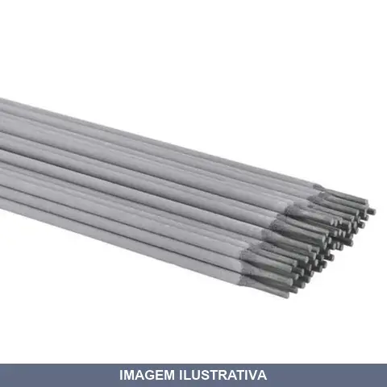
ELETRODO INOX . . OK
Indicação de Uso: Soldagem de aço inoxidável por eletrodo revestido, adequado para unir, reparar e fabricar peças em estruturas que exigem resistência à corrosão e a temperaturas elevadas. Material e Resistência: Núcleo metálico de aço inoxidável com revestimento especial (fluxo) que protege o arco e o metal fundido da contaminação atmosférica, estabiliza a soldagem e adiciona elementos de liga. Vantagem Prática: Proporcionam soldas limpas e precisas com bom acabamento, apresentam alta

ELETRODO INOX . ELETRON
AWS 308 2,5 CAIXA COM 4KG Eletrodo ligado ao Cr-Ni, com baixo teor de C, de excelente soldabilidade, boa remocao de escoria, pouco respingo, arco estavel. Indicado para a soldagem de acos tipo 19/9, resistentes a corrosao intergranular (sensitizacao). Usado nas industrias quimicas, textil, farmaceutica, alimenticia, etc... Recomendado em soldas de uniao de aco inoxidavel austenitico ou em “cladding” de chapas de aco C ou baixa liga onde e exigida resistencia a corrosao. Tambem pode ser usado em
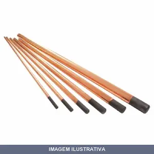
ELETROLDO DE CARVAO
Indicação de Uso: Eletrodo de carbono para corte e goivagem por arco carbônico em operações de chanframento e limpeza de superfícies metálicas. Aplicável em fundições, caldeirarias, estaleiros, minerações e indústria siderúrgica. / Material e Resistência: Eletrodo de carvão com revestimento para operações a arco. / Vantagem Prática: Proporciona corte e goivagem rápidos e econômicos em trabalhos metal-mecânicos.
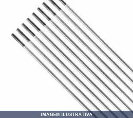
ELETROLDO TUNGSTENIO % CERIO CINZA , SUMIG
ELETRODO DE TUGSTENIO CERIO 2,38 MM 3/32 (CINZA) Os eletrodos de tugstênio para soldagem TIG e tem o papel de servir como um dos terminais do arco voltáico que irá gerar o calor para o precesso de solda. Utilizado para soldagens de aço carbono, aço inoxidavel, níquel e titânio.
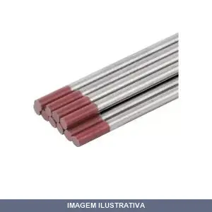
ELETROLDO TUNGSTENIO % TORIO VERMELHO , SUMIG
ELETRODO DE TUGSTENIO COM TH 2,38 MM 3/32 (VERMELHO) Os eletrodos de tugstênio para soldagem TIG e tem o papel de servir como um dos terminais do arco voltáico que irá gerar o calor para o precesso de solda. Utilizado para soldagens de aço carbono, aço inoxidavel, níquel e titânio.
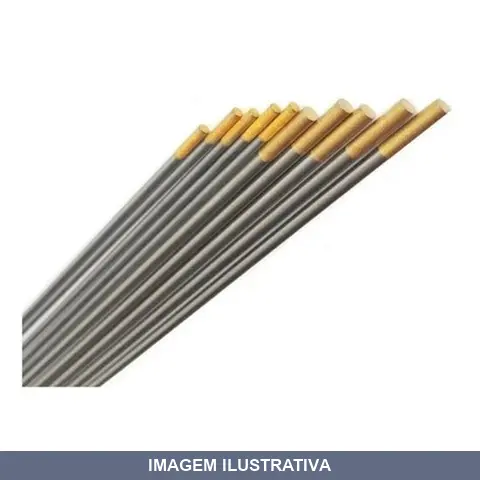
ELETROLDO TUNGSTENIO , LATANIO DOURADO , SUMIG
ELETRODO DE TUGSTENIO LATANIO 2,38 MM 3/32 (DOURADO) Os eletrodos de tugstênio para soldagem TIG e tem o papel de servir como um dos terminais do arco voltáico que irá gerar o calor para o precesso de solda. Utilizado para soldagens de aço carbono, aço inoxidavel, níquel e titânio.
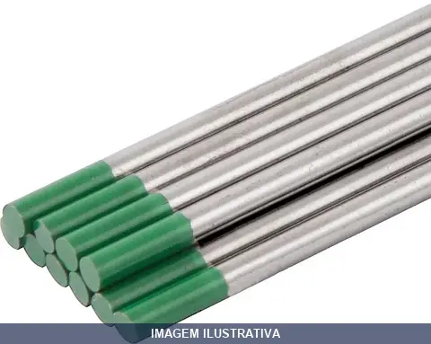
ELETROLDO TUNGSTENIO PURO VERDE , SUMIG
ELETRODO DE TUGSTENIO SEM TH 2,38MM 3/32 (VERDE) Os eletrodos de tugstênio para soldagem TIG e tem o papel de servir como um dos terminais do arco voltáico que irá gerar o calor para o precesso de solda. Utilizado para soldagens de aluminio e magnésio.
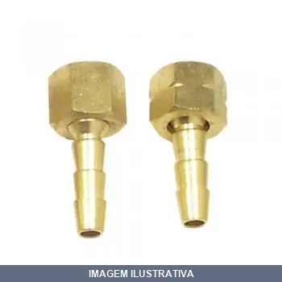
ESP GIRATORIO METAL FEMEA PARA ACETILENO CARBOGRAFITE
Indicação de Uso: Conexão giratória para cilindros e equipamentos de acetileno em trabalhos de soldagem e corte. Material e Resistência: Construção em metal com rosca fêmea. Vantagem Prática: O mecanismo giratório permite ajuste angular sem torcer a mangueira, reduzindo desgaste e vazamentos.
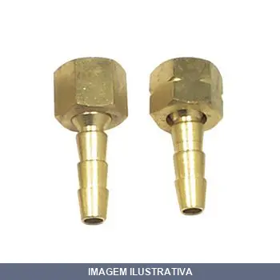
ESP GIRATORIO METAL FEMEA PARA OXIGENIO CARBOGRAFITE
Indicação de Uso: Acoplamento para sistemas de oxigênio, permitindo conexão e desconexão rápida em equipamentos e tubulações. Material e Resistência: Construído em metal, projetado para resistir à corrosão em ambientes com oxigênio. Vantagem Prática: Rosca fêmea giratória facilita o encaixe e manuseio em diferentes posicionamentos.
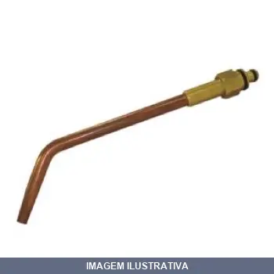
EXTENSAO DE SOLDA AC CG200 CARBOGRAFITE
ESSA EXTENSÃO É PARA O MAÇARICO QUE VENDEMOS Fabricadas em cobre as extensões de solda CG 200 Carbografite são próprias para serem instaladas no maçarico de solda CG 200. Ideais para trabalhos prolongados e em locais de difícil acesso.

EXTENSAO DE SOLDA AC CONDOR
EXTENSÃO SOLDA 200 NRS 02 Para uso em maçaricos de solda série WH 200.

EXTENSAO DE SOLDA GLP CG200 CARBOGRAFITE
ESSA EXTENSAO É PARA O MAÇARICO QUE VENDEMOS EXTENSÃO CG200 GLP Nº06 Fabricadas em cobre as extensões de solda CG 200 Carbografite são próprias para serem instaladas no maçarico de solda CG 200. Ideais para trabalhos prolongados e em locais de difícil acesso.

EXTENSAO DE SOLDA GLP/GN 04P CONDOR
EXTENSÃO SOLDA 200 NRO 4P Para uso em maçaricos de solda série WH 200.
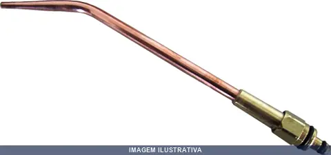
EXTENSAO DE SOLDA GLP/GN 06P CONDOR
Extensão de solda para maçarico WH201, utilizada em soldagens médias com gás GLP/GN. Permite soldar chapas de 0,2 a 3,5mm. Fabricada em cobre eletrolítico com elevada condutibilidade térmica e resistência à corrosão. Aplicável em soldagem de chapas, tubulações e equipamentos de refrigeração.
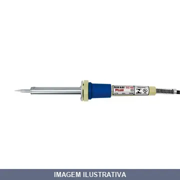
FERRO SOLDA 034WX HIKARI PLUS
FERRO SOLDAR HIKARI PLUS 34W X 127V PLUS Certificado INMETRO desde 2011 " Maior Economia no Consumo " Aquecimento Rápido " Resistência de Mica " Ponta com Tratamento de Ferro e Alumínio " Maior Durabilidade das Pontas " Resistência e Tubo Metálico Substituíveis
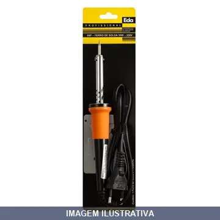
FERRO SOLDA 040WX EDA
Indicação de Uso: Soldagem de peças e estruturas metálicas em trabalhos de fabricação, reparo e manutenção industrial. Material e Resistência: Equipamento elétrico de soldagem com capacidade de 40 amperes, projetado para operação contínua em 127V. Vantagem Prática: Solução compacta e acessível para profissionais e oficinas que realizam trabalhos em metal.
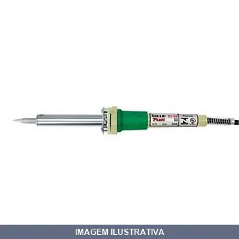
FERRO SOLDA 050WX HIKARI PLUS 127V
Indicação de Uso: Soldagem geral de componentes eletrônicos, placas de circuito impresso, emendas de cabos e terminais, reparos diversos. Material e Resistência: Ponta cônica de cobre, elemento resistivo e tubo metálico substituível, temperatura máxima de 510°C. Vantagem Prática: Aquecimento rápido e eficiência energética.
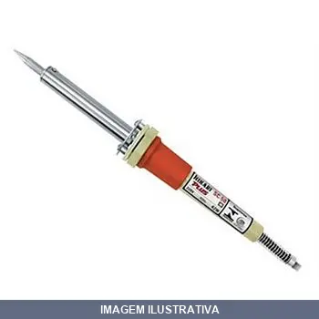
FERRO SOLDA 050WX HIKARI PLUS 220V
Indicação de Uso: Soldagem por calor em aplicações industriais e residenciais, emendas em cabos, fios e terminais metálicos, reparos gerais. Material e Resistência: Ponta de cobre, resistência térmica adequada para temperatura máxima de 510°C, tubo metálico e suporte substituíveis. Vantagem Prática: Aquecimento rápido e eficiência energética.
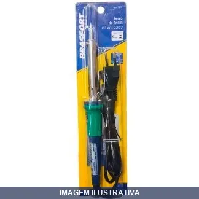
FERRO SOLDA 060WX BRASFORT
Indicação de Uso: Soldagem manual de componentes elétricos, emendas de fios e trabalhos de solda em circuitos impressos e eletrônica em geral. Material e Resistência: Ferro de solda manual com resistência elétrica integrada, operação em voltagem 127V, potência 60W. Vantagem Prática: Ferramenta portátil e de fácil manuseio para uso em bancadas de trabalho, manutenção eletrônica e serviços de reparo.

FERRO SOLDA 060WX EDA
Ferro de solda com potência de 60W e tensão de 127V. Indicado para trabalhos de soldagem em eletrônica, reparos de circuitos e aplicações que exigem precisão. Ferramenta portátil para soldagem ponto a ponto e emendas elétricas.
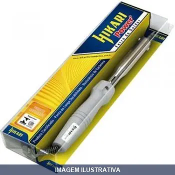
FERRO SOLDA 075WX HIKARI POWER
Ferro de solda com potência de 075W e voltagem 127V. Indicado para trabalhos de soldagem em eletrônica, reparo de circuitos e conexões elétricas de pequeno porte. Ferramenta adequada para uso em oficinas, laboratórios e serviços de manutenção elétrica que requerem soldagem de precisão.
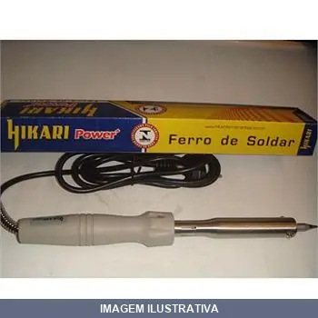
FERRO SOLDA 085WX HIKARI POWER
Ferro de solda para soldagem de componentes eletrônicos, cabos elétricos e conectores. Resistência de cerâmica com filamento de níquel-cromo, substituível. Ponteira com núcleo de cobre, cobertura de ferro e revestimento de estanho. Material antichama de dupla isolação e tubo ventilado. Suporte metálico incluso.
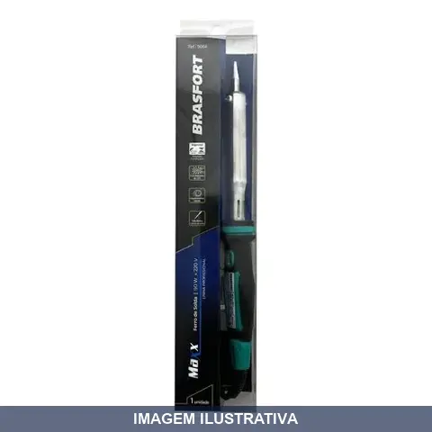
FERRO SOLDA 090WX MAXX BRASFORT
Ferro de solda profissional BRASFORT MAXX 90W com aquecimento rápido e resistência de cerâmica de alta durabilidade. Empunhadura em nylon PA com isolamento térmico em baquelite, ponta de cobre com proteção anticorrosiva, tubo em aço inoxidável e suporte de apoio incluso. Ideal para eletrônica, manutenção e reparos de componentes elétricos.
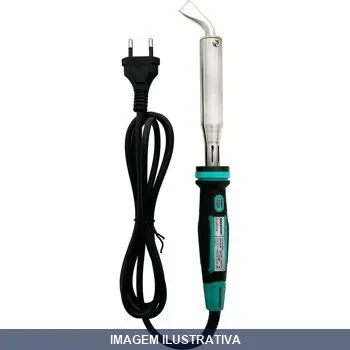
FERRO SOLDA 130WX MAXX BRASFORT
Ferro de solda elétrico alimentado em 127V com potência de 130W. Indicado para trabalhos de soldagem em superfícies metálicas e aplicações que exigem maior área de contato, como funilaria e reparos gerais. Ferramenta portátil para solda por aquecimento direto.
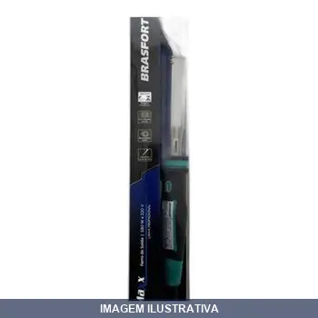
FERRO SOLDA 180WX MAXX BRASFORT
Indicação de Uso: Soldagem geral de metais, reparos, manutenção de equipamentos e trabalhos diversos em oficinas e ambientes industriais. Material e Resistência: Ponta de cobre com proteção anticorrosiva, resistência cerâmica, tubo em aço inoxidável e empunhadura ergonômica. Vantagem Prática: Aquecimento rápido e eficiente para soldagens contínuas.
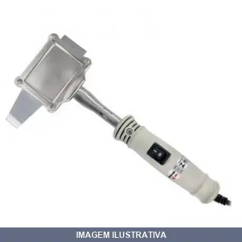
FERRO SOLDA T MACHADINHO / HIKARI
Indicação de Uso: Soldagem profissional em trabalhos elétricos, eletrônicos e em cabos de maior bitola. Material e Resistência: Ponta com núcleo de cobre, cobertura de ferro e revestimento de estanho. Empunhadura isolada e ergonômica. Certificado INMETRO, Classe II de dupla isolação. Vantagem Prática: Aquecimento rápido com chave liga/desliga, mantém temperatura constante para soldas consistentes.
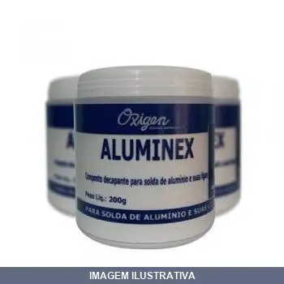
FLUXO PARA SOLDA ALUMINIO PO ALUMINEX
Fluxo em pó à base de cloretos para soldagem e brasagem oxi-gás (acetileno ou GLP) de alumínio das séries 1xxx, 3xxx e 6xxx. Remove efetivamente a película de óxido de alumínio e proporciona ótima fluidez do metal de adição, resultando em junta livre de poros e resistente. Resíduos solúveis em água e facilmente removíveis. Pode ser manuseado também em forma de pasta com água ou álcool.
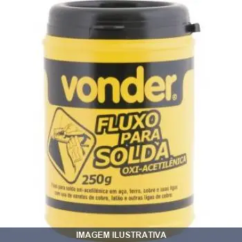
FLUXO PARA SOLDA LATAO/BRONZE PO VONDER
FLUXO PARA SOLDA LATAO / BRONZE 250G VONDER PO TRINCAL Indicado para soldagem de peças, como: aço, latão e bronze, exceto alumínio. Dispensa o uso da vareta de estanho.
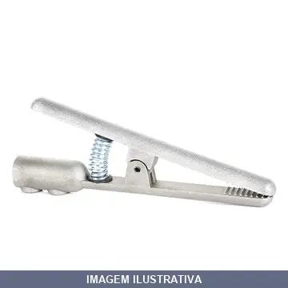
GARRA NEGATIVA ALUMINIO LEDAN
Indicação de Uso: Conexão do cabo terra de máquinas de solda com a peça a ser soldada e aterramento em processos de soldagem. Material e Resistência: Fabricada em liga de alumínio de alta condutibilidade com mola de aço de alta pressão. Capacidade de 300 amperes. Vantagem Prática: Fixação direta do cabo de solda no corpo da garra por dois parafusos tipo bujão, proporcionando contato elétrico e desempenho seguro.

GARRA NEGATIVA MODELO AMERICANO NOLL
Indicação de Uso: Para dar contato e condução de corrente em processos de soldagem, conectada diretamente às peças. Material e Resistência: Contatos em liga de cobre, com design em modelo americano. Vantagem Prática: Proporciona condução estável da polaridade oposta, essencial para circulação eficiente de corrente durante a soldagem.
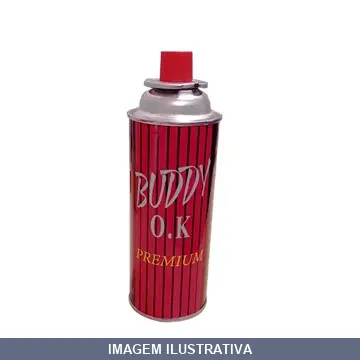
GAS FOGA/MACARICO NAUTIKA
Indicação de Uso: Cartucho de gás combustível descartável para uso em maçaricos e fogareiros portáteis em aplicações diversas. Material e Resistência: Cilindro metálico descartável com gás pressurizado. Vantagem Prática: Recarga compacta e portátil para profissionais e usuários que necessitam de chama controlada em campo ou oficina.
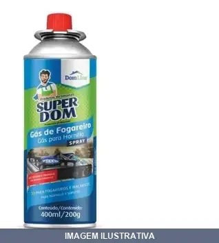
GAS FOGAREIRO DOMLINE
GAS FOGAREIRO DOMLINE 06 X 400ML/200GR ONU 1950 AEROSOIS 2.1 (23)
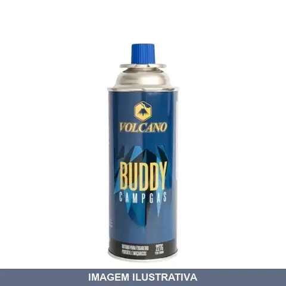
GAS PARA MACARICO COM REFIL LOTUS
Indicação de Uso: Para acoplar em maçaricos e fogareiros portáteis, adequado para solda, flambagem, culinária e artesanato. Material e Resistência: Cartucho descartável com gás butano de baixa pressão, equipado com válvula de segurança e sistema anti-explosão. Vantagem Prática: Engate e desengate sem vazamentos, composição de gás pura que oferece desempenho calórico e maior autonomia em variações de temperatura.
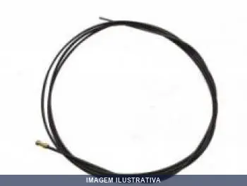
GUIA ESPIRAL . M SU PRETO WELD SUMIG
GUIA ESPIRAL 0,80/1,00MM X 3,00M SU 260/320 WELD PRETO
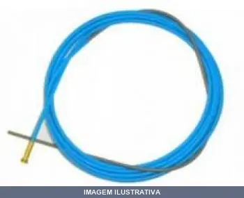
GUIA ESPIRAL . M WELD AZUL SUMIG
Indicação de Uso: Guia espiral para máquina de solda MIG/MAG, utilizado no processo de soldagem para conduzir o arame-eletrodo até a tocha de forma contínua e sem interferências. Material e Resistência: Construção em espiral resistente ao desgaste e às condições de trabalho típicas da soldagem. Vantagem Prática: Reduz travamentos e entupimentos do arame durante a soldagem, prolongando a vida útil dos componentes da máquina.
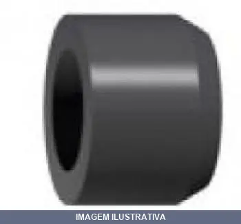
ISOLADOR DO DIFUSOR DE GAS SU / FIBRA SUMIG
Isolador para difusor de gás de tochas de solda MIG/MAG. Fabricado em fibra, isola o difusor de gás responsável pelo fluxo do gás e previne vazamentos durante o processo de soldagem. Compatível com tochas da série SU Sumig.
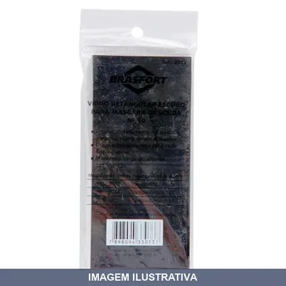
LENTE BRASFORT 51X108 10 8073 [020527]
Lente para máscara de solda fabricada em vidro. Indicação de Uso: Proteção da visão em processos de soldagem, oferecendo proteção contra radiações ultravioleta e infravermelha. Material e Resistência: Vidro resistente e durável. Vantagem Prática: Fácil instalação e compatível com diversos modelos de máscaras de solda.
LENTE BRASFORT 51X108 12 8074 [020528]
Lente para máscara de solda fabricada em vidro. Indicação de Uso: Proteção da visão em processos de soldagem, oferecendo proteção contra radiações ultravioleta e infravermelha. Material e Resistência: Vidro resistente e durável. Vantagem Prática: Fácil instalação e compatível com diversos modelos de máscaras de solda.
LENTE BRASFORT 51X108 14 8075 [016993]
Lente para máscara de solda fabricada em vidro. Indicação de Uso: Proteção da visão em processos de soldagem, oferecendo proteção contra radiações ultravioleta e infravermelha. Material e Resistência: Vidro resistente e durável. Vantagem Prática: Fácil instalação e compatível com diversos modelos de máscaras de solda.

LENTE CARBOGRAFITE
Lente de proteção para soldagem com tonalidade 10, fabricada em vidro especial resistente ao calor e radiação ultravioleta e infravermelha. Indicada para uso em máscaras, escudos e óculos de solda. Apropriada para processos de soldagem MIG/MAG e outros tipos de soldagem a arco.
LENTE PARA MASCARA ESCUR AUTOMATICO EXTERNA VONDER
Lente de proteção externa para máscara de solda com escurecimento automático. Fabricada em policarbonato, oferece resistência a impactos e proteção contra radiação ultravioleta e infravermelha gerada durante o processo de soldagem. Compatível com máscaras de escurecimento automático, proporcionando visibilidade clara antes da soldagem e escurecimento automático durante o arco.
LENTE PARA MASCARA ESCUR AUTOMATICO INTERNA VONDER
Lente de proteção interna para máscara de solda com escurecimento automático. Fabricada em policarbonato, oferece resistência a impactos e proteção contra radiação ultravioleta e infravermelha durante operações de soldagem. A tonalidade escura ativa automaticamente conforme intensidade do arco, protegendo os olhos do operador.
LENTE REDONDA ESCURO BRASFORT
Lente redonda escura fabricada em vidro de alta resistência para proteção visual em trabalhos com solda e maçarico. Oferece proteção contra raios ultravioleta e infravermelho. Adequada para uso em óculos de proteção do soldador.
LENTE REDONDA INCOLOR LEDAN
Lente redonda de vidro incolor para óculos de proteção. Indicada para proteção dos olhos em atividades de solda contra respingos e faíscas. Fabricada pela marca LEDAN, referência em equipamentos de proteção individual.
LIMPADOR DE BICO JOGO AGULHAS NOLL
Jogo de 13 agulhas em aço inox com superfície recartilhada para limpeza de bicos de maçaricos. Não provoca desgaste exagerado dos furos pois não possui arestas cortantes. Inclui estojo de alumínio. Indicado para limpeza de bicos de corte e extensões de solda, mantendo a durabilidade dos equipamentos.
LIMPADOR DE BICO JOGO CONDOR-MG
AGULHEIRO LIMPEZA BICO 80MM - Ç - ACESSORIO EQUIPAMENTO PARA GAS nf 240316 cod: 010149710 tbm 010149710 COD ANTERIOR LIMPADOR DE BICOS Utilizado para a limpeza de bicos de corte e extensões de solda, não provocando o desgaste exagerado dos furos, pois não possui arestas cortantes como as brocas helicoidais. Fabricados em forma de agulhas em aço inox, com superfície recartilhada e de diâmetros variados.
MACARICO CORTE 531N SM
Maçarico de corte com sistema de queimador para trabalhos de corte de metais. Utilizado em soldagem, demolição e serviços gerais que exigem corte por chama. Indicado para profissionais e trabalhos em oficinas, canteiros e manutenção industrial.
MACARICO CORTE CO- BICO - CONDOR-MG
MAÇARICO CORTE CO-3500 Maçarico de corte com 3 tubos. Mistura dos gases realizados na cabeça do maçarico. Porca de fixação do bico de corte externa. Utiliza bicos de corte de 2 sedes, sendo 1502 para misturas AC/OX ou 1503 para misturas GLP/OX. Descrição: CO 3500 Comprimento: 530mm Ângulo da Cabeça: 90° Bicos Utilizados: 1502 AC / 1503 GLP Capacidade de Corte: 200mm Peso: 1,10kg
MACARICO LANCA CHAMA O1 REGISTRO CARBOGRAFITE
MAÇARICO LANÇA CHAMAS Utilizado em aquecimento e uso rural. Haste de 650mm, mangueira de 1,0m de comprimento.
MACARICO LANCA CHAMA O2 REGISTRO CACULA
LANÇA CHAMAS PARA BOTIJÃO DE GAS ROSCA 5/8W, 2 REGISTRO CAÇULA REF: 74.42.115.002 CAÇULA Indicado para pelar porcos, limpeza de galpões e aviários, entre outros. Utilizado com botijão de 13 kg. Bocal zincado, proporcionando maior resistência à oxidação/corrosão. Possui 2 registros, um no cabo e outro na extremidade da mangueira, aumentando a praticidade no trabalho. Tipo da rosca do lança-chamas:5/8" BSW - Polegada rosca grossa Comprimento da mangueira do lança-chamas:2,00 m Comprimento da lanç
MACARICO MANUAL PARA GAS VONDER
MAÇARICO MANUAL PARA GAS MAPP VONDER Indicado para brasagem e soldagem Possui acendimento automático, bico com giro de 360°, trava de segurança contra acionamento acidental (desligado), trava do gatilho acionado (ligado) e regulador de gás manual
MACARICO SOLDA CG CARBOGRAFITE
MAÇARICO DE SOLDA CG200 Próprio para trabalhos leves de solda em locais de difícil acesso. Corpo fabricado em latão forjado e punho em alumínio extrudado. Volantes de latão de fácil manuseio, extremamente macios e sensíveis ao ajuste e vedação em esferas de aço inox. Utiliza extensões CG 200 com misturador adequado para a mistura dos gases na proporção correta, velocidade e volume apropriados, eliminando os riscos do retrocesso de chama.
MACARICO SOLDA GAZ PRIX LOTUS
Maçarico para solda a gás, indicado para trabalhos de soldagem e aquecimento de materiais. Utilizado em aplicações de manutenção, reparo e fabricação que requerem chama controlada. Ferramenta portátil essencial para soldadores e profissionais de manutenção industrial.
MACARICO SOLDA PORT. AUT.PARA CART.PRETO GLOBALMIX
Maçarico portátil automático para cartucho. Indicação de Uso: soldagem e aquecimento de materiais. Material e Resistência: corpo em plástico preto. Vantagem Prática: mobilidade e facilidade de operação para trabalhos de solda em campo.
MACARICO SOLDA WH-200N CONDOR-MG
MAÇARICO SOLDA WH-200N Maçarico de solda de uso geral. Fabricado em latão de alta resistência. Usado para trabalhos leves. Conjuntos de regulagem dispostos de forma ergonômica. Descrição: WH 200 Comprimento: 186mm Extensões Utilizadas: Série 200 AC ou GLP Capacidade de Solda: 14mm AC / 8mm GLP Código: 404903

MACARICO SOLDA WH-201N CONDOR-MG
Maçarico para soldagem. Ferramenta portátil utilizada em trabalhos de solda e aquecimento de materiais metálicos. Indicado para aplicações em soldagem geral, manutenção e reparos. Proporciona controle de chama para diferentes intensidades de trabalho.
MANG PARA LIGACAO DE GAS FLEX COM DUAS ABRAÇADEIRA BRUKIT
Indicação de Uso: Ligação flexível para instalações de gás encanado ou botijão em fogões, fornos e cooktops. Material e Resistência: Aço inoxidável AISI 304 com malha metálica, resistente a ambientes salinos, vibrações, altas e baixas temperaturas. Inclui abraçadeiras para fixação segura. Vantagem Prática: Não propaga chamas oferecendo segurança. Conforme normas técnicas vigentes.
MANG PARA LIGACAO DE GAS FLEX PARA ESP COM ABRAÇADEIRA BRUKI
Indicação de Uso: Mangueira para ligação de gás em fogões, fogareiros, aquecedores de passagem e fogões industriais. Pode conduzir água em situações específicas. Material e Resistência: Malha em aço inoxidável AISI 304 com abraçadeira. Resiste a ambientes rigorosos, altas e baixas pressões, intempéries. Conforme norma ABNT NBR 13419. Vantagem Prática: Proporciona flexibilidade, absorve ruídos e vibrações, oferecendo acabamento seguro para as conexões.

MARCADOR INDUSTRIAL VERMELHO PLUMA
Marcador com ponta de pluma para aplicações industriais. Tinta vermelha de secagem rápida, adequado para marcar superfícies em obras, marcenaria e manutenção. Ponta resistente permite traços precisos e visíveis em diversos materiais.
MASCARA SOLDA ESCUREC AUTOM MASAE NOLL 04
MASCARA DE PROTEÇÃO PARA SOLDA AUTOESCURECIMENTO REF: MASAE-04
MASCARA SOLDA ESCUREC AUTOM MASAE NOLL 05
MASCARA DE PROTEÇÃO PARA SOLDA AUTOESCURECIMENTO REF: MASAE-05
MASCARA SOLDA TIPO ESCUDO PLASTCOR
Indicação de Uso: Proteção dos olhos e face contra radiações, impactos de partículas volantes e calor provenientes de operações de soldagem. Material e Resistência: Escudo confeccionado em polipropileno preto, com visor fixo, placa de segurança e filtro de luz em vidro verde escuro. Estrutura resistente a impactos frontais. Vantagem Prática: Disponível em versões com cabo manual ou carneira com regulagem por catraca, permitindo fácil adaptação e uso conforme necessidade do operador.
MASCARA SOLDA VISOR ARTIC AJUSTE SIMPLES PLASTCOR
Indicação de Uso: Proteção dos olhos e face contra radiações e impactos de partículas volantes provenientes de serviços de soldagem. Material e Resistência: Confeccionada em polipropileno, com suspensão em polietileno de baixa densidade e visor articulado que bascula para facilitar a inspeção do trabalho. Vantagem Prática: Carneira com ajuste simples para regulagem rápida. Suporte plástico com fendas para fixação de placas de segurança e cobertura.
MASCARA SOLDA VISOR ARTIC CARBOGRAFITE
MASCARA ADVANCED VISOR ARTICULADO COM CATRACA Máscaras utilizadas para proteção visual e facial dos raios ultravioleta e infravermelho do arco elétrico. Usadas com lentes retangulares 51mm x 108mm. Design moderno, carcaças em material super resistente, leves, anatômicas e apresentadas nas versões visor articulado, carneira com ou sem catraca. Peças de reposição disponíveis.

MASCARA SOLDA VISOR ARTIC COM CATRACA PLASTCOR
Máscara de solda fabricada em polipropileno na cor preta. Suspensão em polietileno com ajuste em catraca. Visor articulado que facilita o ajuste durante o uso. Protege os olhos e a face contra radiações e impactos de partículas volantes frontais provenientes de serviços de soldagem. Certificação CA 36.014.
MASCARA SOLDA VISOR FIXO CARBOGRAFITE
MASCARA ADVANCED VISOR FIXO C/C Máscaras utilizadas para proteção visual e facial dos raios ultravioleta e infravermelho do arco elétrico. Usadas com lentes retangulares 51mm x 108mm. Design moderno. Carcaças em material super resistente. Leves e anatômicas. Apresentadas nas versões visor fixo. Carneira com ou sem catraca. Peças de reposição disponíveis.
MASCARA SOLDA VISOR FIXO PLASTCOR
Máscara de solda em escudo confeccionada em polipropileno preto com visor fixo. Suspensão em polietileno com ajuste simples ou catraca. Protege os olhos e a face contra radiações e impactos de partículas volantes frontais provenientes de trabalhos de soldagem. Suporta filtro de luz e placa de cobertura (vendidos separadamente). Certificação CA 36014.
PASTA SOLDA GRS BETST
Indicação de Uso: Soldagem em superfícies metálicas com alto grau de oxidação e em aplicações onde fluxos líquidos são de difícil aplicação, como tubos, equipamentos de refrigeração e terminais de baterias. Não recomendado para conexões eletro-eletrônicas. Material e Resistência: Pasta para solda com poder de adesão, facilita o fluxo do metal durante soldagem e reduz formação de oxidação. Vantagem Prática: Facilitador no processo de soldagem para aderência do metal e garantir conexões
PECA DE REPOSICAO MOLA PLASTICA ADVANCED
MOLA PLASTICA ADVANCED REF 105 Peças de Reposição para Máscaras de Solda.
PONTA PARA FERRO DE SOLDA POWER HIKARI
Acessório de reposição cônico para ferro de solda Hikari Power 80. Fabricado em cobre para transferência térmica. Compatível com ferros Power 80 de diferentes tensões. Peça facilmente trocável quando desgastada ou danificada, ampliando a vida útil do equipamento.
PONTEIRA UNICA CURTA RQ WELD 3P SUMIG
Ponteira única curta com rosca quadrada, fabricada em cobre. Compatível com tochas Sumig Weld 315, SU 335 e SU 320. Indicação de Uso: Para soldagem MIG-MAG em tochas de solda Sumig. Material e Resistência: Fabricada em cobre de qualidade. Vantagem Prática: Sistema de rosca quadrada facilita a troca e reposição da ponteira.
PONTEIRA UNICA LONGA RQ WELD 3P SUMIG
Ponteira de contato com rosca quadrada para tochas de solda MIG-MAG. Indicação de Uso: Soldagem MIG-MAG em equipamentos compatíveis com sistema de rosca quadrada. Material e Resistência: Fabricada em cobre, oferece condutividade e durabilidade adequadas. Vantagem Prática: Sistema de rosca quadrada facilita remoção e reposição rápida.
PORTA ELETROLDO BRASFORT 300A 8301 [017014]
Porta eletrodo para soldagem com capacidade de 300A. Utilizado em processos de soldagem a arco elétrico para fixação e condução de eletrodos consumíveis. Material resistente ao calor e à corrosão gerada durante a operação de soldagem.
PORTA ELETROLDO BRASFORT 500A 8300 [017015]
Porta eletrodo para soldagem de 500A. Componente de soldador que realiza o contato elétrico e mantém o eletrodo posicionado durante o processo de soldagem. Construído para resistir ao calor e ao desgaste gerado pela operação. Proporciona manuseio seguro e prático durante trabalhos de soldagem elétrica.
PORTA ELETROLDO C1000 CARBOGRAFITE
PORTA ELETRODO C1000 Os porta eletrodos Carbografite são referência nacional. Fabricados dentro dos mais altos padrões de qualidade, oferecem segurança, grande resistência, alta durabilidade e são de fácil manutenção. Peças de reposição disponíveis. Referência nacional em porta eletrodos. Muito utilizados na indústria naval e no setor metal mecânico. Robustos, duráveis e de fácil manutenção.
![PORTA ELETROLDO ELITE 650A [001214]](fotos/001214.webp)
PORTA ELETROLDO ELITE 650A [001214]
Porta-eletrodo para soldadora de 650A. Acessório que conecta o eletrodo à máquina de solda, permitindo a condução de corrente elétrica durante operações de soldagem. Fabricado em material resistente ao calor intenso gerado no arco voltaico. Indicação de Uso: Soldagem elétrica industrial e manutenção. Vantagem Prática: Facilita a troca de eletrodos e mantém a estabilidade da soldagem em trabalhos contínuos.
PORTA ELETROLDO ELITE 850A [001837]
Porta-eletrodo para soldagem com capacidade de 850A. Componente destinado a acoplar eletrodos em máquinas de solda, indicado para trabalhos de soldagem industrial que requerem alta amperagem. Construção robusta adequada para soldagem de estruturas metálicas e manutenção pesada.
PORTA ELETROLDO FLEX LOTUS
Porta eletrodo para soldagem de 600A com construção flexível. Indicado para trabalhos de soldagem que exigem alta amperagem. Material resistente ao calor e desgaste. Proporciona manuseio e durabilidade em operações de soldagem contínua.
PORTA ELETROLDO NOLL 600A [017619]
Alicate porta-eletrodo para soldagem por arco elétrico. Serve como suporte e condutor para o eletrodo durante o processo de soldagem. Composto por garra de fixação e cabo isolante que permite ao soldador segurar com segurança. Indicado para trabalhos com ciclos normais e leves em serralherias, oficinas mecânicas e indústrias. Fabricado em material resistente.
PORTA ELETROLDO PLUS LOTUS
Porta eletrodos para soldagem com capacidade de 500A. Indicado para trabalhos de solda elétrica em geral. Material resistente ao calor e desgaste do processo de soldagem. Facilita o manuseio e fixação do eletrodo durante a operação de soldagem.
REFIL PARA MACARICO/ISQUEIROS RECARREGAVEL LOTUS
Refil recarregável para macarico e isqueiros. Indicado para reabastecimento de dispositivos de ignição portáteis. Material compatível com sistemas de queimadores de mão. Permite reutilização do equipamento através de recarga simples.
REGISTRO ESFERA PARA GAS BLUKIT
Indicação de Uso: Registro de esfera para condução de gases tipo GLP, GN e GNF, com acionamento tipo 2 em 1. Material e Resistência: Liga de cobre com acabamento niquelado e elastômeros. Vantagem Prática: Permite controlar o fluxo de gás conforme a necessidade, ideal para fogão e similares.
REGISTRO GAS GLP P- COM MANGUEIRA MAX
REGISTRO PARA GAS GLP P-02 COM MANGUEIRA 5/16'' MAXCHAMA
REGISTRO GAS GLP P- MAXCHAMAS 02
Indicação de Uso: Registro para controle de gás GLP em fogões e fogareiros de alta pressão. Material e Resistência: Construído em zamac (não enferruja) com borboleta metálica para durabilidade e resistência à corrosão. Vantagem Prática: Oferece fácil controle de fluxo de gás e manuseio prático.
REGISTRO GAS GLP P- MAXCHAMAS 13
Indicação de Uso: Registro para controle de gás GLP em fogões e fogareiros de alta pressão. Material e Resistência: Construído em zamac (não enferruja) com borboleta metálica para durabilidade e resistência à corrosão. Vantagem Prática: Oferece fácil controle de fluxo de gás e manuseio prático.
REGULADOR GAS COM MANGUEIRA ALIANCA
REGULADOR GAS BLINDADO COM MANGUEIRA 504 ALIANÇA Conteúdo da Embalagem: 1 Regulador de gás. Acompanha: 80 cm de mangueira e 2 abraçadeiras. Indicado para regular a pressão de saída em botijões de até 13 kg. Uso doméstico. Jamais utilizar qualquer tipo de ferramenta para apertar a borboleta. Validade 5 anos. Pronto para a instalação, pois acompanha 80 cm de mangueira e 2 abraçadeiras
REGULADOR GAS COM MANGUEIRA IMAR
REGULADOR GAS BLINDADO COM MANGUEIRA (0728/02) IMAR APROVADO PELO INMETRO USO DOMÉSTICO Indicado para regular a pressão de saída em botijões de até 13 kg Rosca de entrada: padrão P 13 - 5/8” UNC Conexão de saída: espigão Acompanha: mangueira com 80 cm e 2 abraçadeiras
REGULADOR GAS COM MANOMETRO ALIANCA
Regulador de pressão para gás GLP doméstico com manômetro integrado. Regula a pressão do gás do botijão garantindo fluxo controlado e seguro para fogões e equipamentos a gás. Manômetro permite leitura precisa da pressão em escala verde de uso. Construção em aço e zamac com válvula de segurança contra excesso de pressão. Vazão de 2 kg/hora. Conexão borboleta P13 na entrada e 3/8 BM na saída. Válido por 5 anos.
REGULADOR GAS GRANDE ALIANCA
Regulador de gás indicado para controle de pressão em sistemas de gás. Componente essencial para aplicações que utilizam gás, proporcionando estabilidade e segurança no fluxo. Construído em material resistente à corrosão.
REGULADOR GAS PEQUENO ALIANCA
REGULADOR GAS ALIANÇA PEQUENO 505/01 O modelo 505/01 foi projetado para utilização do G.L.P em botijões com consumo de até 1Kg por hora de gás e com pressão nominal de saída de 2,8kPa (baixa pressão) Fabricado com a mais avançada tecnologia já ajustados para reduzir a pressão do gás que sai do botijão, controlando a automaticamente desde o mínimo até o máximo consumo do fogão Certificado pelo TUV Rheinlad/INMETRO, segue as determinações das Normas Técnicas de Fabricação (NBR 8473) Material: - Bo
REGULADOR PRESSAO ACETILENO MDN , CONDOR-MG
Indicação de Uso: Regulador de pressão para cilindros de acetileno em trabalhos de soldagem e corte com maçarico. Material e Resistência: Construído para resistir à pressão do gás acetileno. Vantagem Prática: Permite controlar e manter a pressão de trabalho constante durante operações de soldagem e corte.
REGULADOR PRESSAO ACETILENO NOLL
Indicação de Uso: Reduz e regula a pressão de saída do acetileno de cilindros e reservatórios para uso em operações de solda, corte, aquecimento e soldagem. Material e Resistência: Corpo em latão forjado com precisão na leitura. Pressão máxima entrada 40 kgf/cm² (600 psi) e saída 2,5 kgf/cm² (35 psi). Vantagem Prática: Mantém pressão constante mesmo com variações de entrada, facilitando regulagem segura da vazão.
REGULADOR PRESSAO ACETILENO SM
Regulador de simples estágio para cilindro de acetileno. Corpo forjado em latão com tampa pintada em epóxi na cor preta. Dispõe de dois sistemas de segurança: válvula de alívio externa e rompimento de diafragma interno. Manopla de regulagem com trava interna. Indicado para trabalhos leves de solda, corte e aquecimento.
REGULADOR PRESSAO ARGONIO CARBOGRAFITE
REGULADOR CIL ARG SERIE 800 Projetados para trabalhos em operações de solda, corte e aquecimento oxicombustíveis. Ideais para utilização em oficinas mecânicas, serviços de manutenção e reparos, caldeirarias em geral. Corpo e capa em latão forjado para a máxima resistência. Manômetro de 63mm de diâmetro em caixa de aço carbono e dupla escala. Conexões de entrada conforme NBR 11725 e saída conforme CGA E-1. Sistema interno com filtro sinterizado tipo cartucho, proporcionando maior segurança
REGULADOR PRESSAO ARGONIO NOLL
Regulador de pressão para cilindro de argônio, com construção robusta e resistente. Garante controle preciso da pressão do gás para aplicações de soldagem. Resistente a condições de trabalho exigentes, com durabilidade prolongada.
REGULADOR PRESSAO GLP NOLL
Regulador de pressão para cilindros de GLP/GN. Indicação de Uso: Sistemas de gás residenciais, comerciais e industriais. Material e Resistência: Componente de válvula mecânica de controle, reduz e estabiliza a pressão do gás para nível compatível com uso em aparelhos. Vantagem Prática: Controla a pressão do gás, evitando vazamentos e garantindo funcionamento seguro de fogões, aquecedores, fornos e outros equipamentos a gás.
REGULADOR PRESSAO MED RP03 RF
Regulador de pressão com medidor analógico para controle de gases e fluidos em sistemas pneumáticos e hidráulicos. Reduz e estabiliza a pressão para valores de trabalho seguro. Equipado com manômetro de alta precisão para ajuste exato da pressão. Aplicável em processos de solda, corte, sistemas de GLP, acetileno e outros gases industriais.

REGULADOR PRESSAO NITROGENIO CARBOGRAFITE
Regulador de pressão para cilindro de nitrogênio. Indicado para operações que utilizam nitrogênio como gás inerte, como proteção em soldagem, corte a plasma e aplicações industriais. Corpo e capa em latão forjado com manômetro de 63mm em caixa de aço carbono e dupla escala. Filtro sinterizado tipo cartucho. Pressão máxima entrada: 230kgf/cm². Pressão máxima saída: 8kgf/cm². Vazão: 30m³/h. Conforme NBR 11725 entrada e CGA E-1 saída.
REGULADOR PRESSAO NITROGENIO CONDOR-MG
Indicação de Uso: Regulação e controle de pressão de nitrogênio em sistemas pneumáticos e hidráulicos. Material e Resistência: Construído para resistir à pressão do nitrogênio em aplicações industriais. Vantagem Prática: Permite ajuste preciso da pressão conforme necessidade da aplicação.
REGULADOR PRESSAO OXIGENIO CARBOGRAFITE
REGULADOR CILINDRO OXIGENIO SERIE 700 Projetados para trabalhos em operações de solda, corte e aquecimento oxicombustíveis. Ideais para utilização em oficinas mecânicas, serviços de manutenção e reparos, caldeirarias em geral. Corpo e capa em latão forjado para a máxima resistência. Manômetro de 63mm de diâmetro em caixa de aço carbono e dupla escala. Conexões de entrada conforme NBR 11725 e saída conforme CGA E-1. Sistema interno com filtro sinterizado tipo cartucho, proporcionando maior s
REGULADOR PRESSAO OXIGENIO MDN CONDOR-MG
Regulador de pressão de 1 estágio para cilindros. Equipamento destinado a reduzir a alta pressão dos reservatórios de gases para adequar as pressões requeridas pelo equipamento e trabalho. Instrumento projetado para compatibilidade específica com oxigênio, essencial para funcionamento correto e seguro do sistema oxi-combustível. Aplicações em corte, solda e aquecimento industrial. Conformidade com normas EN/ISO/ABNT.
REGULADOR PRESSAO OXIGENIO NOLL
Regulador de pressão para cilindro de oxigênio de simples estágio. Reduz a pressão alta e variável do gás para uma pressão de saída constante e adequada ao uso. Corpo forjado em latão. Equipado com manômetro de entrada e saída e válvula de segurança calibrada para aliviar a pressão em caso de sobrecarga. Indicado para hospitais, clínicas, laboratórios, soldagem e outros serviços que requeiram controle preciso do fluxo de oxigênio.
REGULADOR PRESSAO OXIGENIO SM
Regulador de simples estágio para cilindros de gás oxigênio. Corpo forjado em latão com tampa em aço cromado. Apresenta dois sistemas de segurança: externo (válvula de alívio) e interno (rompimento do diafragma). Indicado para trabalhos leves de solda, corte e aquecimento.
SOLDA AZUL TUBO GR BEST
Solda em tubo especial para aparelhos eletro-eletrônicos, com fio fino de fácil aplicação em componentes metálicos. Composição com estanho e chumbo, apropriada para trabalhos de soldagem eletrônica de precisão. Baixo resíduo, facilitando acabamento sem necessidade de limpeza adicional.
SOLDA AZUL TUBO GR EMAVE
Solda em tubo com base de estanho 63x37 indicada para pequenos reparos em eletrônica, eletricidade e informática. Fio de estanho com fluxo tipo AA (resina ativada) que facilita a aderência e soldagem. De fácil utilização com ferro de solda. Apropriada para trabalhos em aparelhos eletrodomésticos, CFTV, alarmes e circuitos eletrônicos.
SOLDA CARRETEL AZUL GR 125 189
SOLDA BEST CARRETEL 1,0MM AZUL 125G REF: 189 189 MSX - Indicado para soldagem manual de conexões eletrônicas.
SOLDA CARRETEL AZUL GR 250
Indicação de Uso: Soldagem eletrônica em aplicações de onda ou imersão. / Material e Resistência: Liga estanho-chumbo (Sn/Pb) com fluxo ativo incorporado no fio. / Vantagem Prática: Fluxo integral elimina necessidade de fluxo externo, proporcionando soldas limpas e com boa molhabilidade em circuitos eletrônicos.
SOLDA CARRETEL AZUL GR 500 189
SOLDA BEST CARRETEL 1,0MM AZUL 500G 189 189 MSX - Indicado para soldagem manual de conexões eletrônicas.
SOLDA ESTANHO BEST 40X60
Solda em barra de estanho para uso geral em trabalhos de soldagem eletrônica e hidráulica. Indicação de Uso: Soldagem de componentes eletrônicos, circuitos e conexões em sistemas hidráulicos. Material e Resistência: Liga de estanho com excelente fluidez e aderência. Vantagem Prática: Oferece soldas limpas e duráveis, reduzindo defeitos e retrabalho.
SOLDA ESTANHO BEST 50X50
SOLDA ESTANHO 50 X 50 MAIS OU MENOS 7 BARRAS (KG) Estanho em barra indicado especialmente para radiadores, resfriadores e chapas de zinco
SOLDA MIG . COM ARAME TUBULAR OK TUBROD ULTRA
Arame tubular rutílico tipo flux cored para soldagem MIG em um único passe ou multipasse em todas as posições. Indicado para aços de baixo e médio teor de carbono, soldagem estrutural e construção pesada. Compatível com gás de proteção 100% CO2 ou misturas Argônio+20-25% CO2. Baixo índice de respingos e ótima remoção de escória. Classificação AWS A5.20 E71T-1, depósito de metal com baixo hidrogênio H8.
![SOLDA MIG . COM ELETRON 0 80 15 KG [023785]](fotos/023785.webp)
SOLDA MIG . COM ELETRON 0 80 15 KG [023785]
Indicação de Uso: Soldagem de estruturas metálicas, chapas e tubulações em aço carbono. Material e Resistência: Arame de solda MIG para uso em processos de soldagem semi-automática. Vantagem Prática: Facilita a soldagem contínua com alimentação automática do arame, reduzindo tempo de trabalho em projetos de soldagem industrial e estrutural.
![SOLDA MIG . COM ELETRON 1 00 15 KG [023786]](fotos/023786.webp)
SOLDA MIG . COM ELETRON 1 00 15 KG [023786]
Indicação de Uso: Soldagem de aços carbono, soldagem estrutural e trabalhos de fabricação e reparo em metais. Material e Resistência: Arame sólido de aço para processo MIG. Vantagem Prática: Facilita operação contínua sem necessidade de troca frequente do consumível.
![SOLDA MIG . COM ELETRON 1 20 15 KG [023787]](fotos/023787.webp)
SOLDA MIG . COM ELETRON 1 20 15 KG [023787]
Indicação de Uso: Soldagem MIG de estruturas metálicas, chapas e tubulações. Material e Resistência: Arame sólido de aço carbono. Vantagem Prática: Ideal para soldagem contínua em trabalhos de fabricação e reparo metalúrgico.
SOLDA MIG . DISPENSA O USO DE GAS NOLL
Indicação de Uso: Ideal para reparos automotivos, manutenção geral e trabalhos em ambientes externos. Material e Resistência: Utiliza arame tubular com núcleo de fluxo que libera gás protetor durante a soldagem, dispensando cilindro externo. Vantagem Prática: Oferece mobilidade e simplicidade operacional, elimina necessidade de gás e equipamentos auxiliares, adequada para soldagem de aço carbono e ligas de aço.
SOLDA VARETA
Indicação de Uso: Soldagem de estruturas metálicas, chapas e tubulações em trabalhos de manutenção, fabricação e construção. Material e Resistência: Vareta de solda com composição própria para união de metais ferrosos. Vantagem Prática: Facilita o trabalho de soldagem manual por ser um consumível específico para esse fim.
SOLDA VARETA AMARELA VONDER
Indicação de Uso: Brasagem de cobre, bronze, alumínio, níquel, aço inox e ferro fundido. Confecção e reparação de tubos, conexões para encanamentos e peças de equipamentos diversos. Material e Resistência: Liga de latão composta por cobre, zinco e estanho, sem revestimento. Possui alta fluidez e acabamento em soldagem. Vantagem Prática: Capilares flexíveis garantem êxito em soldagens. Indicada para processo oxiacetilênico com fluxo de solda.
SUGADOR DE SOLDA ALUMINIO BRASFORT
Indicação de Uso: Remoção de solda em componentes de placas de circuito impresso e dispositivos eletrônicos. Material e Resistência: Corpo em alumínio com ponta de PVC removível. Sistema de mola independente do reservatório de resíduos. Vantagem Prática: Remoção precisa de solda por sucção mediante acionamento do botão lateral.
SUPORTE NUCEO ADPT PARA ARAME MIG GERDAU
Núcleo adaptador para carretéis de arame MIG. Material em plástico de alta resistência. Compatível com carretéis de arame MIG de marcas como ESAB, BELGO e GERDAU. Instalação simples e rápida. Garante desenrolamento suave do arame durante o processo de soldagem mecanizada e semiautomática.
TOCHA MIG WELD RG/EC SUMIG
TOCHA MIG WELD 315 3,00M RG/EC Tocha Mig/Mag Weld 315 3 Metros c/Euro Conector - Sumig - Corpo Compacto, Resistente a Impactos, com Isolamento Térmico e Elétrico - Duas Opções de Difusores do Gás - Versátil/Compacta - Indicada para serralherias, oficinas, industrias - Trabalhos em geral para aço carbono, alumínio e inox - Gás: CO2 - Correntes (A) / Ciclo de trabalho (%): CO2 - 300/60 Argônio e Misturas - 260/60 - Arames: 0,80mm a 1,20mm
TOCHA PARA GOIVAGEM VONDER
Indicação de Uso: Operações de goivagem e corte com ar comprimido utilizando eletrodos de carvão. Aplicável em limpeza de soldas defeituosas, remoção de oxidação, rebites e trabalhos de recuperação em estruturas metálicas. Material e Resistência: Ferramenta pneumática com consumo de ar de 790 l/min. Capa compatível com eletrodos de 1/8" a 3/8". Vantagem Prática: Ideal para trabalhos de precisão que exigem mobilidade e controle em operações de goivagem.
TRANSFERIDOR GAS MAXCHAMAS
Indicação de Uso: Transferência e distribuição de gás em aplicações de soldagem e trabalhos com chama. Material e Resistência: Construção robusta para suportar pressão de gás. Vantagem Prática: Permite controle e direcionamento do fluxo de gás entre cilindros e equipamentos.

TUBO DE CONTATO CURTO WELD SUMIG
Tubo de contato para equipamentos de soldagem MIG/MAG. Realiza a condução do arame-eletrodo até a tocha de soldagem. Indicado para trabalhos de soldagem em geral. Comprimento curto, adequado para tochas com distâncias menores. Construído em material condutor de eletricidade para soldagem.
TUBO DE CONTATO LONGO WELD SUMIG
Indicação de Uso: Tubo de contato para tochas MIG/MAG Sumig linha Weld. Conduz energia de soldagem até o arame e o guia até a poça de fusão. Material e Resistência: Usinado a partir de tubos trefilados em cobre, com diâmetro interno consistente e alta concentricidade. Vantagem Prática: Alimentação constante do arame com redução de respingos.
VALVULA RETENCAO CHAMA OX/AC PAR CONDOR
Válvula de retenção para sistema de corte com chama oxiacetilênica. Equipamento de segurança que impede o refluxo de gases entre os cilindros de oxigênio e acetileno e a tocha de corte. Indicado para trabalhos com solda e corte por chama. Material em metal com resistência adequada para pressão de gases.

VALVULA RETENCAO CORTA CHAMA VCF MG CONDOR
Indicação de Uso: Utilizada em maçaricos e reguladores de pressão para impedir retrocesso de chama e refluxo de gases em sistemas oxicombustíveis com acetileno e GLP. Material e Resistência: Válvula de retenção com filtro de aço inox sinterizado que absorve calor e extingue a chama em caso de retrocesso. Vantagem Prática: Componente essencial de segurança para operações de soldagem e corte de metais, instalação compatível com conexões padrão em maçaricos.

VALVULA RETENCAO CORTA CHAMA VCF RG CONDOR
Indicação de Uso: Operações oxicombustíveis em reguladores de pressão e maçaricos. Conforme norma NR-18.11.6, é obrigatório seu uso para evitar retrocesso de chamas. Material e Resistência: Filtro de aço inox sinterizado que extingue a chama por absorção de calor. Rosca 9/16" x 18 UNF. Vazão máxima de 30 m³/h. Pressão máxima: 1,5 bar (AC), 5 bar (GLP), 10 bar (H²). Vantagem Prática: Duplo sistema de segurança: válvula de retenção que impede fluxo reverso dos gases e elemento corta-chama que

VALVULA RETENCAO CORTA CHAMA VCF RO CONDOR
Indicação de Uso: Válvula para reguladores de oxigênio em operações oxicombustíveis. Função dupla de segurança para extinguir retrocesso de chama e impedir propagação do fogo. Material e Resistência: Possui sistema de retenção que impede fluxo reverso dos gases, com filtro de aço inox sinterizado para absorção de calor. Vantagem Prática: Dois sistemas de segurança integrados em um acessório conforme normas regulamentares de segurança.
VALVULA RETENCAO CORTA CHAMA VCFN MO CONDOR
Válvula corta-chama para maçarico com oxigênio. Dois sistemas de segurança: válvula de retenção que impede fluxo reverso dos gases, e filtro de aço inox sinterizado que absorve calor e extingue retrocesso de chama. Indicada para operações oxicombustíveis em maçaricos e reguladores de pressão.
VALVULA RETENCAO CORTA CHAMA VCR MAC ACET SM
Indicação de Uso: Válvula corta chama para maçarico acetileno, desenvolvida para garantir segurança em processos de solda, corte e aquecimento. Impede o retorno da chama até as fontes de suprimento e protege cilindros de gases e redes de distribuição. Material e Resistência: Corpo fabricado em latão. Filtro contra chama de aço inoxidável sintetizado. Pressão máxima de 1,5 bar, fluxo máximo de 10 m³/h. Vantagem Prática: Válvula unidirecional que extingue retrocesso de chama, impedindo acesso ao
VALVULA RETENCAO CORTA CHAMA VCR MAC OXIG SM
Válvula unidirecional para maçarico oxigênio que impede a reversão dos fluxos de gases, evitando formação de mistura gasosa e reduzindo o risco de explosão. Filtro corta chama de aço inoxidável sinterizado que extingue o retrocesso de chama, impedindo que atinja o regulador e sistema de suprimento dos gases. Atende norma NR-18. Uso obrigatório em operações de soldagem, corte e aquecimento.
VALVULA RETENCAO CORTA CHAMA VCR REG ACET SM
Válvula de retenção com filtro corta chama para regulador de acetileno. Corpo em latão com filtro de aço inoxidável sinterizado que extingue o retrocesso de chama, impedindo que atinja o regulador e o sistema de suprimento de gases. Válvula unidirecional que evita a reversão dos fluxos gasosos e reduz o risco de explosão. Atende à norma NR-18.

VALVULA RETENCAO CORTA CHAMA VCR REG OXIG SM
Indicação de Uso: Equipamentos oxicombustíveis para solda, corte e aquecimento. Protege cilindros de gases e redes de distribuição. Material e Resistência: Corpo em latão com filtro corta-chama de aço inoxidável sinterizado. Vantagem Prática: Impede reversão dos fluxos de gases e extingue retrocesso de chama, protegendo o regulador e sistema de suprimento. Atende norma NR-18.
VARETA DE ALUMINIO AWS ER SUMIG
Indicação de Uso: Soldagem e união de materiais metálicos, apropriada para trabalhos em alumínio e suas ligas. Material e Resistência: Vareta de alumínio conforme especificação AWS ER 4043, oferecendo boa resistência à corrosão. Vantagem Prática: Facilita o processo de soldagem em estruturas de alumínio com acabamento adequado.
VARETA DE AÇO CARBONO TIG ER70S SUMIG
Indicação de Uso: Para soldagem TIG em aços carbono, chapas finas e passes de raiz em chapas ou tubos. Material e Resistência: Aço carbono revestido com camada de cobre, atendendo norma AWS A5.18. Vantagem Prática: Oferece propriedade mecânica à junta soldada e ótimo rendimento no processo de soldagem.
VARETA DE FOSCOPER (SOLDA OXIACETILENICA) SUMIG
Vareta para soldagem oxiacetilênica de cobre e suas ligas. Composição: liga de cobre com adição de fósforo. Aplicação: indústrias de refrigeração e componentes elétricos. Conforme norma DIN 8513 L CU P7.
VARETA DE INOX ER SUMIG
Indicação de Uso: Soldagem de chapas de aço inoxidável em encanamentos, tubos, componentes diversos e revestimentos. Aplicável em setores químico, de fertilizantes, refinarias, alimentação, cozinhas, hospitais e indústrias afins. Material e Resistência: Aço inoxidável austenítico. Depósito de solda com baixo carbono e elevado grau de qualidade em juntas soldadas. Disponível em tipos ER 308L e ER 316L conforme especificação. Vantagem Prática: Compatível com equipamentos de soldagem TIG para